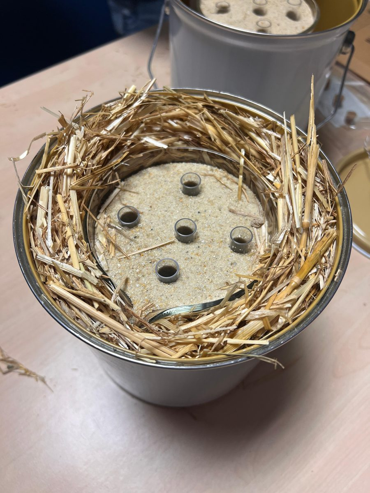
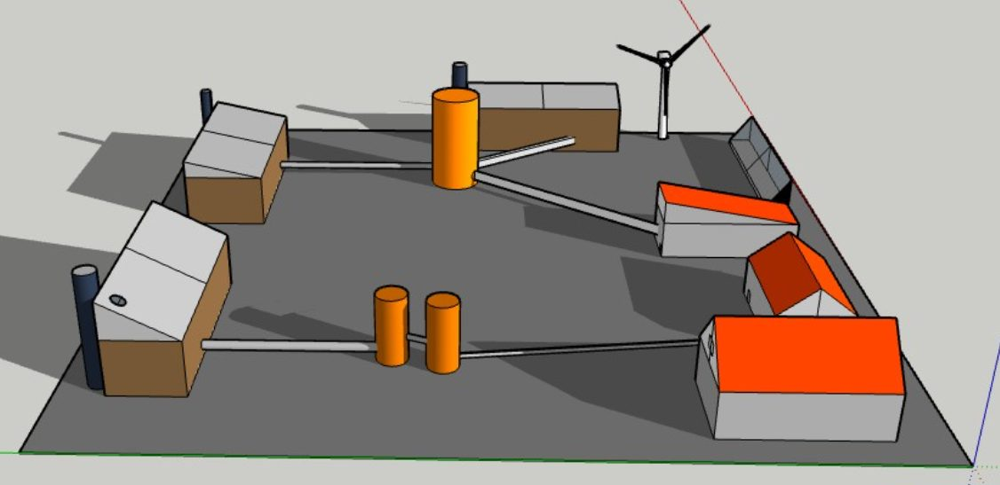

Prépa T² · Team project · 2026
Thermal energy storage: sand batteries vs salt batteries
Renewable energy is intermittent, so storing it is one of the key challenges of the energy transition. Our team compared two emerging thermal batteries: sand batteries, which store heat at up to 600 °C, and salt batteries, which store it through a reversible chemical reaction. We combined physical modelling (heat equation, advection equation), a laboratory experiment and an urban case study modelled in 3D, and we interviewed the director of the start-up Water Horizon.
My contribution
- Built the cost model for the insulation layer of the sand battery, balancing insulation cost against heat losses over 10 years, and found the optimal thickness.
- Took part in designing and running the sand-battery experiment (thermocouples, PicoLog acquisition).
- Carried out bibliographic research and contributed to group brainstorming.
1.55 moptimal perlite insulation thickness (10-year budget)
≈ 43 %of the water's heat stored by the sand layer in our experiment
3experimental set-ups compared

